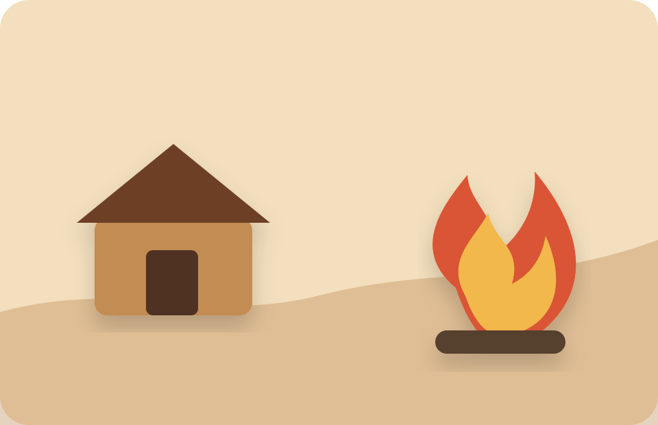
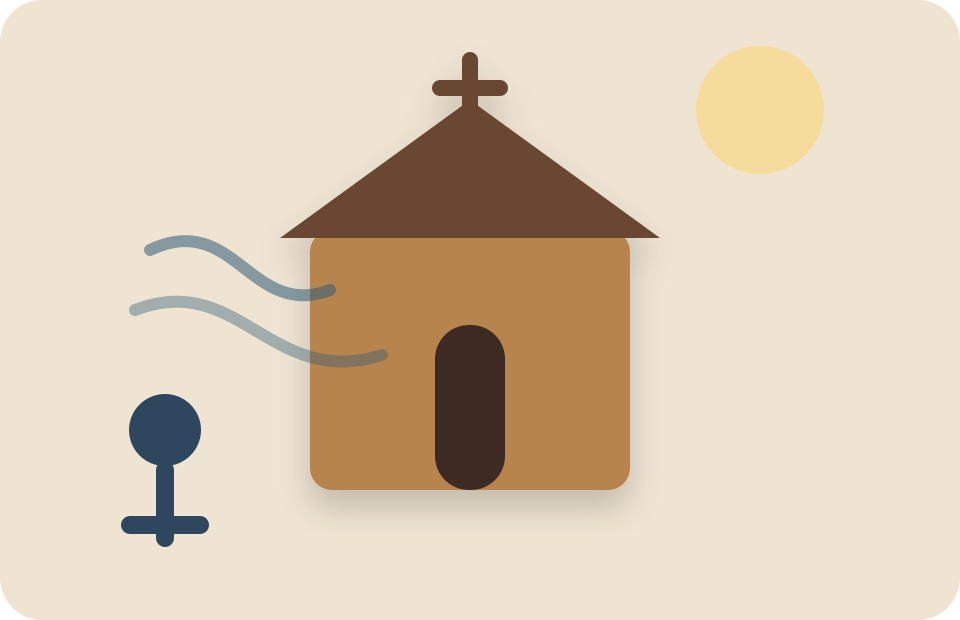
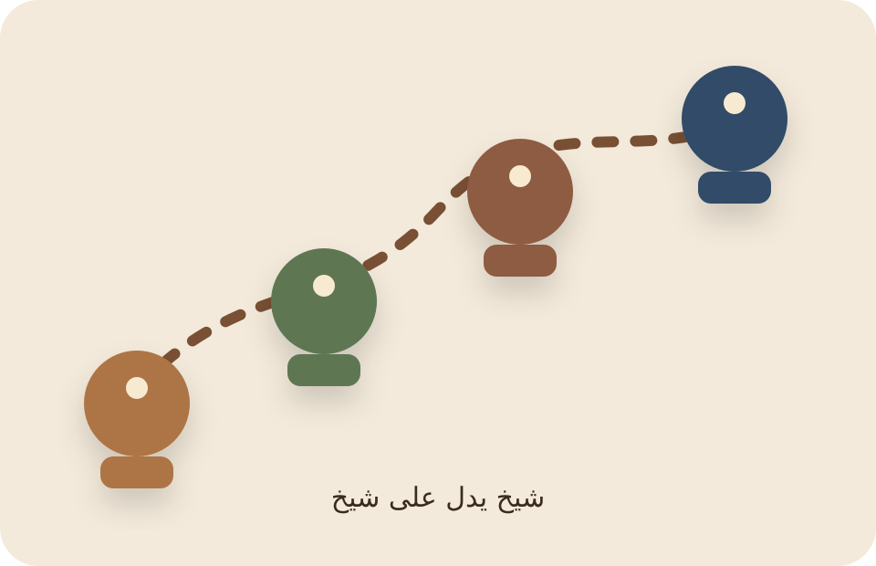
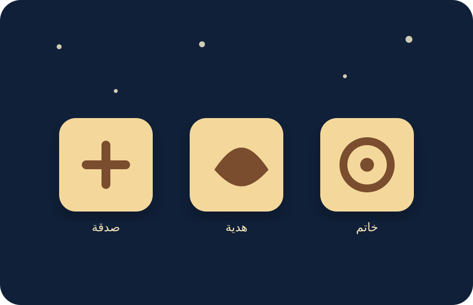
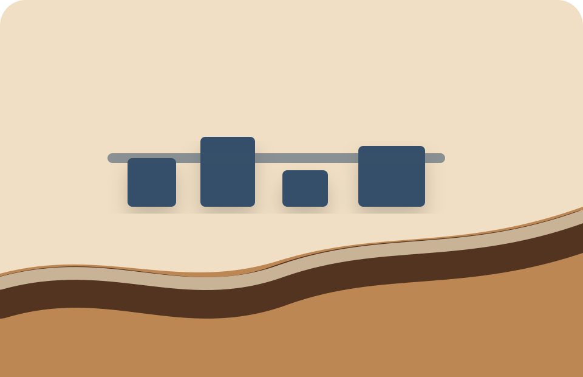
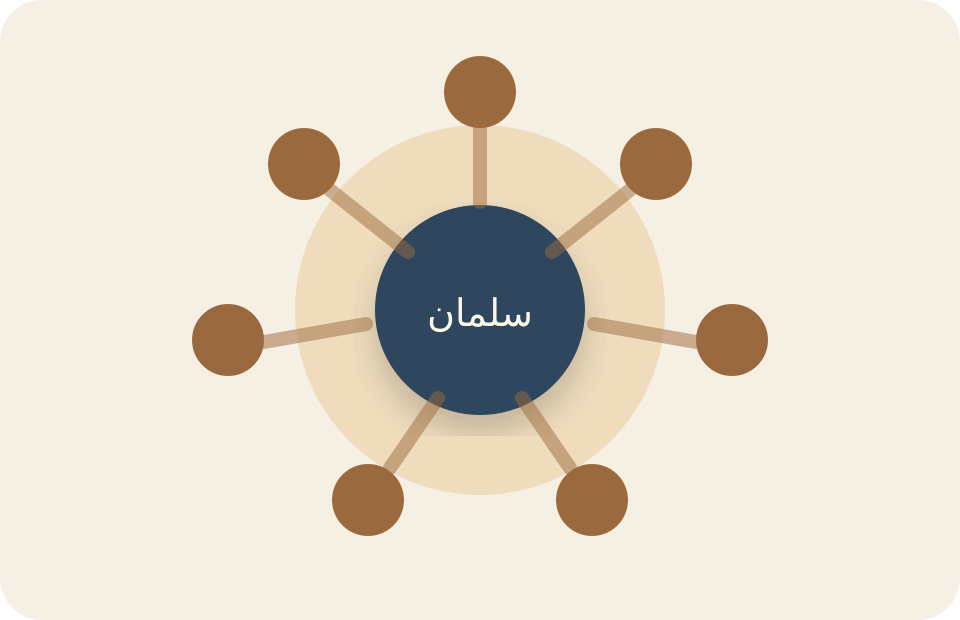
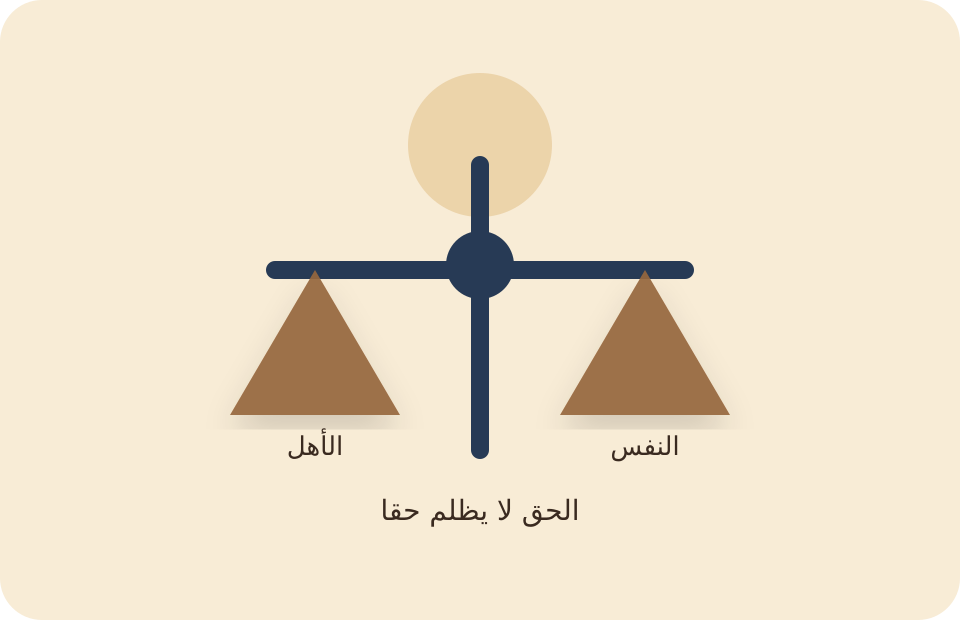
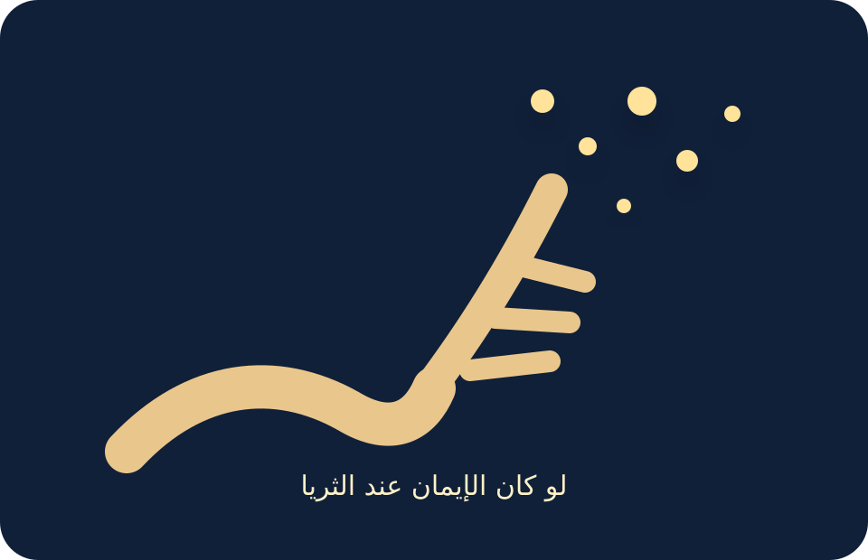
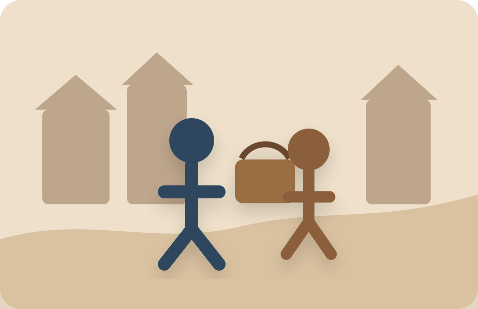

تقرئين السيرة كسرد متصل مع الصور والمصادر.
سلمان: رجل بدأ رحلته بسؤال
لم تبدأ قصة سلمان الفارسي رضي الله عنه من ساحة معركة ولا من مجلس سلطان، بل بدأت من قلق داخلي صادق: أهذا الذي ورثته عن قومي هو الحق كله؟ كان السؤال أكبر من بيته وبلده ومكانته، وأقوى من خوف أبيه عليه.
من هنا صار سلمان صورة للإنسان الذي لا يكتفي بالمألوف إذا وجد في قلبه نداءً إلى اليقين. تنقل بين رجال الدين والبلدان، وخسر الأمان والمال والحرية، لكنه لم يخسر اتجاهه.
المغزى:
من صدق في طلب الحقيقة، لم تجعله المسافات ولا الخسارات يتوقف.
خلاصة للحفظ:
سلمان رضي الله عنه بدأ رحلته بسؤال صادق عن الحقيقة.
سؤال تثبيت
ما الفكرة الأولى التي تفتح قصة سلمان؟
إظهار الجواب
أن طلب الحقيقة بدأ من قلبٍ لا يرضى بالجواب الموروث دون يقين.

من فارس: قلب لا يرضى بالوراثة العمياء
كان سلمان من بلاد فارس، من جهة أصفهان في الرواية المشهورة، نشأ في بيت وجاهة؛ أبوه دهقان قريته، شديد الحب له والخوف عليه. لكنه لم يكن ابن الترف الهادئ فقط؛ كان في داخله سؤال لا يسكت.
بدأ طريقه من بيئة مجوسية، موكلًا بالنار التي لا تُترك تخبو. لكن النار التي شدّته حقًا لم تكن نار المعبد، بل نار السؤال: أين الحق؟
المغزى:
إنسان يبدأ من الموروث، لكنه لا يجعل الموروث آخر الحقيقة.
خلاصة للحفظ:
نشأ سلمان في فارس، لكنه لم يجعل موروثه نهاية الطريق.
سؤال تثبيت
ما الذي يميز بداية سلمان في فارس؟
إظهار الجواب
أنه خرج من بيئة مألوفة، ومع ذلك ظل يبحث عن الحق بصدق.

حين سمع الصلاة تغيّر اتجاه العمر
خرج سلمان إلى ضيعة أبيه، فمرّ بكنيسة، فسمع صلاة قومٍ يعبدون الله على غير ما يعرف. دخل، نظر، وسأل. ثم رجع إلى أبيه بقلبٍ لم يعد كما خرج.
قُيّد وحُبس، لكنه عرف أن الطريق قد انفتح. ومن هنا يبدأ السرد الجميل: ليس هروبًا من بيت، بل هجرة من جواب ناقص إلى سؤال أكبر.
المغزى:
العبرة: بداية الهداية قد تكون لحظة انتباه صادقة، لا خطبة طويلة.
خلاصة للحفظ:
لحظة سماع الصلاة كانت بداية انعطاف كبير في حياته.
سؤال تثبيت
ماذا حدث عندما مرّ سلمان بالكنيسة؟
إظهار الجواب
سمع الصلاة، فسأل عن الدين، وبدأ قلبه يتجه إلى طريق جديد.

من الشام إلى الموصل ونصيبين وعمورية: شيخ يسلّمه إلى شيخ
انتقل سلمان بين رجال من أهل الكتاب؛ رأى في بعضهم فسادًا، وفي بعضهم صدقًا وزهدًا. لم يكن ساذجًا؛ فرّق بين الدين حين يكون طريقًا إلى الله، والدين حين يتحول إلى كنز مخفي خلف الوعظ.
وكان كل رجل صالح يدله على من بعده، حتى انتهى إلى صاحب عمورية، وهناك سمع خلاصة الانتظار: لقد أظلّ زمان نبي، يخرج بأرض العرب، مهاجره إلى أرض بين حرتين ذات نخل.
المغزى:
هنا يبرز سلمان كصاحب بصيرة: لا يرفض الحق لأن بعض أهله خانوه.
خلاصة للحفظ:
انتقل بين المعلّمين، وميّز بين الصادق والفاسد.
سؤال تثبيت
لماذا كانت سلسلة المعلّمين مهمة في رحلته؟
إظهار الجواب
لأن كل معلّم صالح قرّبه خطوة من معرفة النبي المنتظر.

ثلاث علامات، وقلب يقترب من اليقين
أُعطي سلمان علامات: لا يأكل النبي الصدقة، ويأكل الهدية، وبين كتفيه خاتم النبوة. لم يندفع بلا اختبار، ولم يتكبر على العلامة حين ظهرت.
في المدينة جرّب العلامة الأولى، ثم الثانية، ثم لمح الخاتم. عندها لم يبق السؤال معلّقًا؛ لقد وجد الوجهة التي تعب عمره في طلبها.
المغزى:
السرد هنا لا يمجّد الشك لذاته، بل يمجّد الصدق في طلب اليقين.
خلاصة للحفظ:
اختبر العلامات الثلاث حتى وصل إلى اليقين.
سؤال تثبيت
ما العلامات التي كان ينتظرها سلمان؟
إظهار الجواب
ألا يأكل النبي الصدقة، ويأكل الهدية، وبين كتفيه خاتم النبوة.
من رقّ البشر إلى حرية الإيمان
خانته قافلة وباعته عبدًا، ثم دارت به الأيدي حتى صار في المدينة. العبودية أخّرته عن بدر وأحد، لكنها لم تلغِ مكانه.
أرشده النبي ﷺ إلى المكاتبة، وأعانه الصحابة، وغرس النبي ﷺ بيده النخلات حتى تمت حريته. في هذا المشهد تتجلى الجماعة المؤمنة: لا تسمع قصة الألم فقط، بل تشارك في فكّ القيد.
المغزى:
الحرية هنا ليست شعارًا؛ هي نخلة تُغرس، ومال يُجمع، ويد نبوية تضع الوديّ في الأرض.
خلاصة للحفظ:
تحرر سلمان من الرق، وبدأ يشارك النبي ﷺ مشاهده.
سؤال تثبيت
كيف أعانه النبي ﷺ والصحابة في عتقه؟
إظهار الجواب
بمكاتبته على النخل والمال، ثم أعانوه حتى وفّى ما عليه.
مصادر هذا المشهد

الخندق: حين صارت الخبرة الفارسية حماية للمدينة
في الأحزاب، اجتمع الخطر حول المدينة. هنا لم يكن سلمان ضيفًا على التاريخ؛ صار صانعًا لفكرة. أشار بحفر الخندق، وهي خبرة حربية عرفها من بلاد فارس ولم تكن معهودة عند العرب.
كل صحابي له مجال يضيء فيه؛ وسلمان أضاء حين قدّم خبرته السابقة لخدمة الرسالة الجديدة.
المغزى:
الماضي لا يُمحى دائمًا بعد الهداية؛ أحيانًا يُعاد توظيفه في الخير.
خلاصة للحفظ:
خبرته الفارسية صارت سببًا في حماية المدينة يوم الخندق.
سؤال تثبيت
ما الفكرة التي اشتهر بها سلمان في الخندق؟
إظهار الجواب
الإشارة بحفر الخندق حول المدينة دفاعًا عنها.

سلمان منا: انتماء الإيمان فوق جغرافيا الدم
في سياق الخندق تنازع المهاجرون والأنصار محبة سلمان: كل فريق يقول هو منا. وتذكر السيرة العبارة المشهورة: «سلمان منا أهل البيت».
الأدق توثيقيًا أنها ليست في رتبة أحاديث الصحيحين، لكنها في الوجدان الإسلامي صارت عنوانًا لمعنى كبير: القرب من النبي ﷺ قد تصنعه الهجرة والصدق والعمل، لا النسب وحده.
المغزى:
هذه العبارة ـ عند ذكرها ـ تُفهم كتكريم ومكانة، لا كنسب حرفي.
خلاصة للحفظ:
قيمة سلمان جاءت من الإيمان لا من النسب أو الوطن.
سؤال تثبيت
ماذا يدل معنى “سلمان منا” في سياق السيرة؟
إظهار الجواب
يدل على مكانته وقربه الإيماني وفضله بين الصحابة.
مصادر هذا المشهد

مع أبي الدرداء: العبادة التي لا تظلم البيت ولا النفس
زار سلمان أبا الدرداء، فرأى أثر المبالغة في العبادة على البيت والنفس. لم يطفئ شوق العبادة، لكنه أعاد ترتيب الحقوق: للرب حق، وللنفس حق، وللأهل حق.
بلغ الخبر النبي ﷺ فقال إن سلمان صدق. وهذا من أجمل ما في شخصيته: ليس زاهدًا غائبًا عن الحياة، بل فقيه يضع العبادة في ميزان الرحمة.
المغزى:
هنا سلمان ليس فقط الباحث عن الحقيقة، بل المعلّم الذي يمنع الحقيقة من أن تتحول إلى قسوة.
خلاصة للحفظ:
علّم أبا الدرداء أن العبادة لا تلغي حقوق النفس والأهل.
سؤال تثبيت
ما الدرس العملي من قصة سلمان وأبي الدرداء؟
إظهار الجواب
أن لكل من الرب والنفس والأهل حقًا، ولا يصح إهمال حق باسم حق آخر.
مصادر هذا المشهد

الإيمان عند الثريا: سلمان رمز أمة أوسع من العرب
في صحيح مسلم، وضع النبي ﷺ يده على سلمان حين ذُكر قوم يدركون الإيمان ولو كان عند الثريا. هذا يفتح معنى عالميًا: الإسلام لا يحصر النور في قبيلة أو لسان.
وتُروى في فضائله أخبار أخرى، منها حديث الترمذي في اشتياق الجنة لعلي وعمار وسلمان، ويُذكر مع التنبيه إلى درجته. والميزان هنا واضح: ما ثبت في الصحيحين يُذكر بثقة، وما جاء في الفضائل يذكر مع درجته دون أن يُجعل في منزلة الصحيح.
المغزى:
سلمان صار رمزًا مبكرًا لعبور الرسالة من المحلية إلى الإنسانية.
خلاصة للحفظ:
صار سلمان رمزًا لعالمية الإسلام وطلب الإيمان والعلم.
سؤال تثبيت
كيف ارتبط سلمان بحديث الإيمان عند الثريا؟
إظهار الجواب
وضع النبي ﷺ يده عليه عند ذكر قوم يدركون الإيمان ولو كان بعيدًا.

أمير المدائن: السلطة التي لم تُغيّر هيئة القلب
تكثر في كتب التراجم أخبار زهده: عمل يده، بساطة عيشه، قلة ما تركه، وحرصه ألا تكون الإمارة حاجزًا بينه وبين الناس.
هذه الأخبار هي المادة التي يحبها السرد التربوي: رجل خرج من قيد العبودية، ثم لم تجعله الإمارة عبدًا لصورتها.
المغزى:
الزهد عند سلمان ليس رفضًا للعالم، بل حرية من تضخيم الذات.
خلاصة للحفظ:
أمير المدائن بقي متواضعًا، لا تغريه صورة السلطة.
سؤال تثبيت
ما أبرز معنى في أخبار سلمان وهو أمير المدائن؟
إظهار الجواب
أن الإمارة لم تغيّر تواضعه ولا زهده ولا قربه من الناس.
رحيل في المدائن، وبقاء معنى الباحث
المشهور أنه توفي في المدائن. أما سنة الوفاة وعمره ففيهما خلاف بين أهل الأخبار، وقد انتقد الذهبي المبالغات التي تجعله عاش مئات السنين بلا سند قوي.
لكن ما لا يختلف عليه المعنى: أن سلمان عاش طويلًا في طلب الحق، فلما وجده لم يجعله ذكرى شخصية، بل حوّله إلى عمل، وفقه، وخدمة، وزهد.
المغزى:
كلما انتهت القصة عادت إلى أولها: رجل بحث بصدق، فصار هو نفسه دليلًا لمن يبحث.
خلاصة للحفظ:
رحل سلمان وبقيت قصته درسًا في صدق البحث والعمل.
سؤال تثبيت
ما المعنى الباقي من خاتمة حياته؟
إظهار الجواب
أن من يبحث بصدق ويعمل بما وجد يصير دليلاً لغيره.